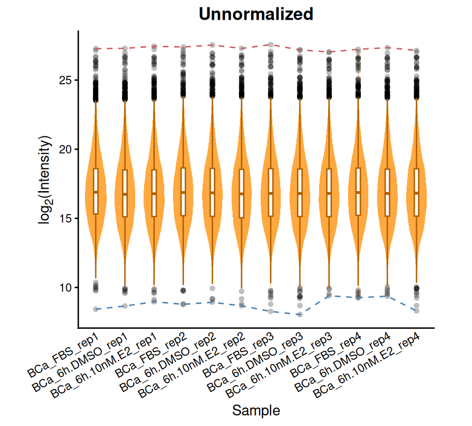
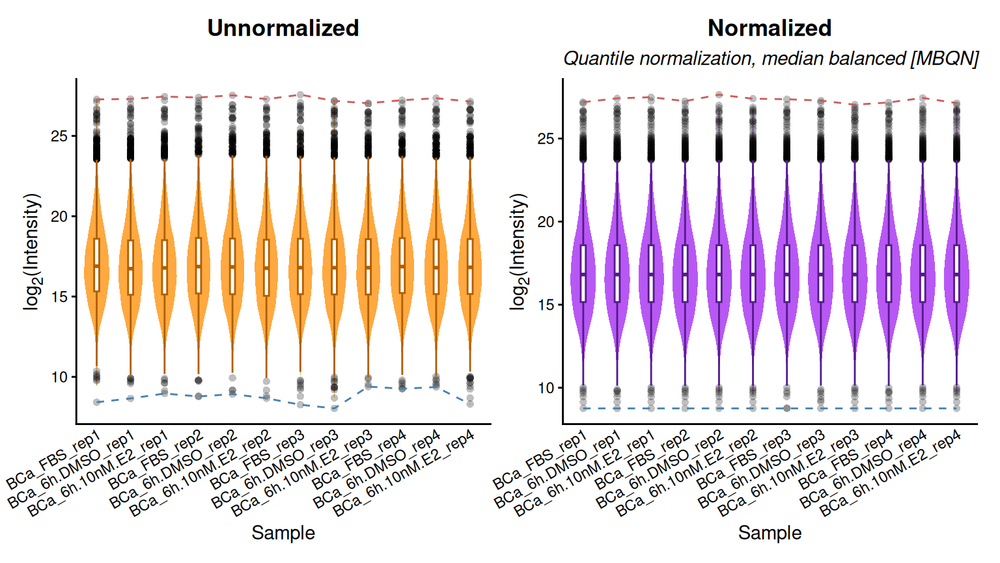
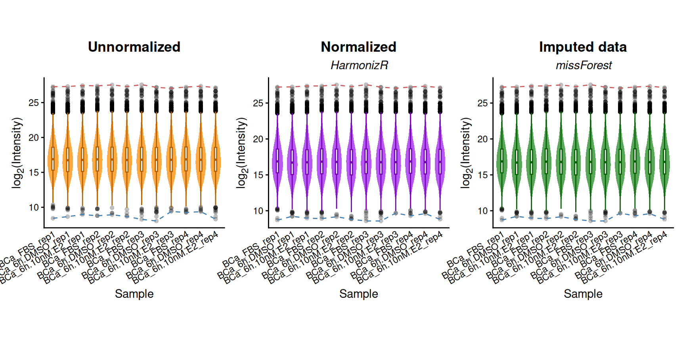
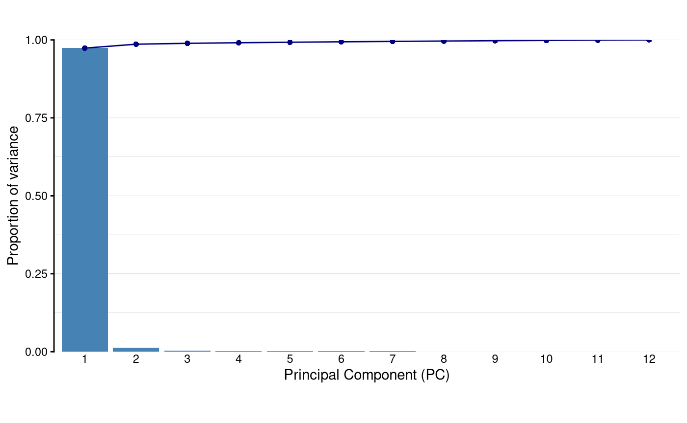
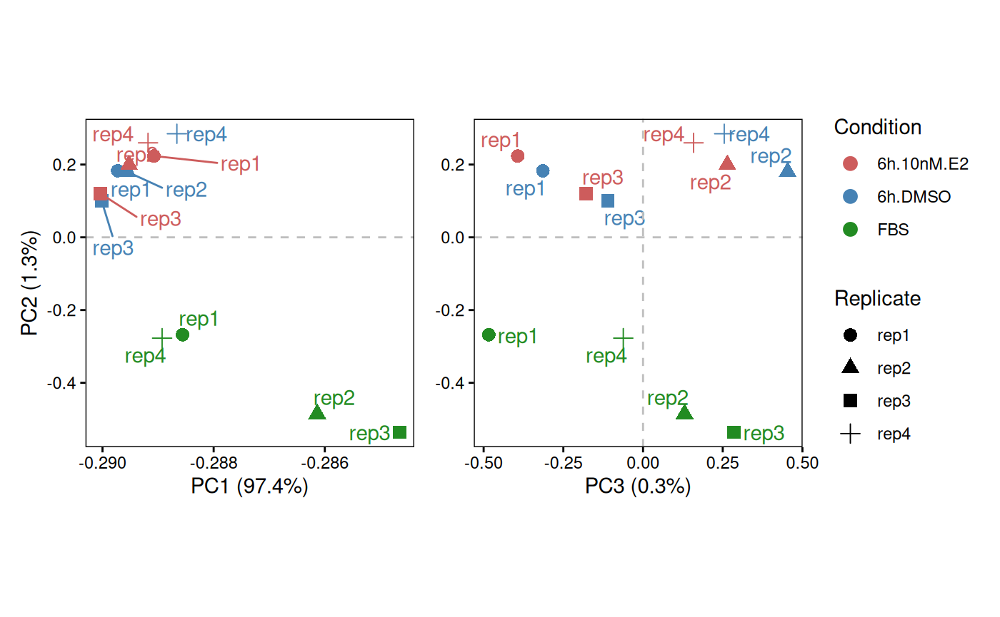
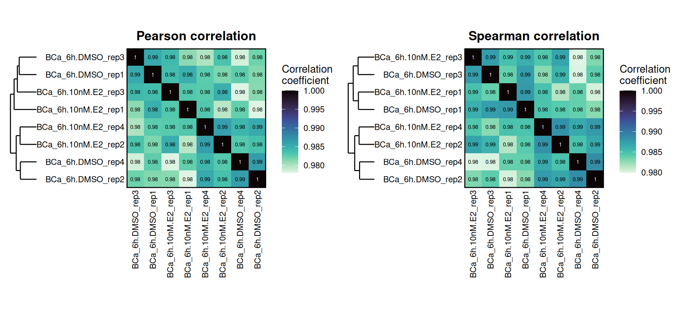
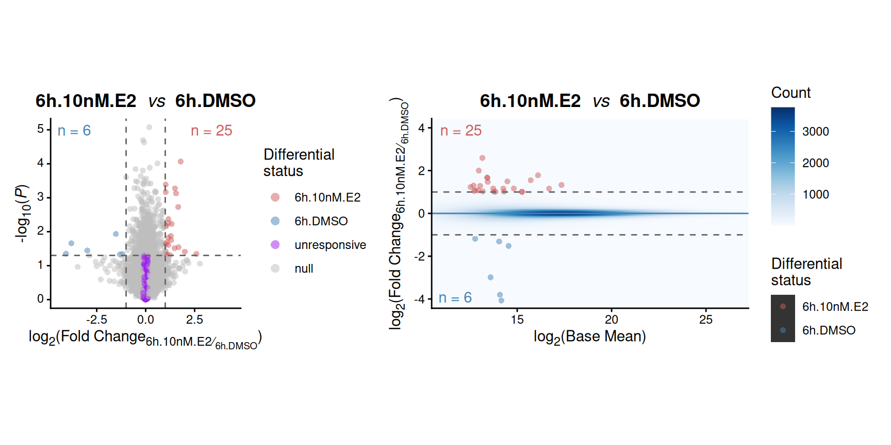
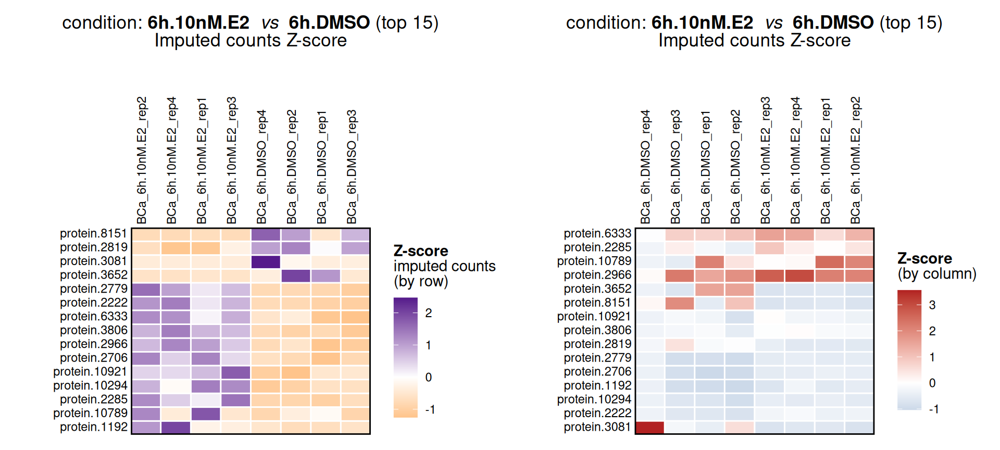
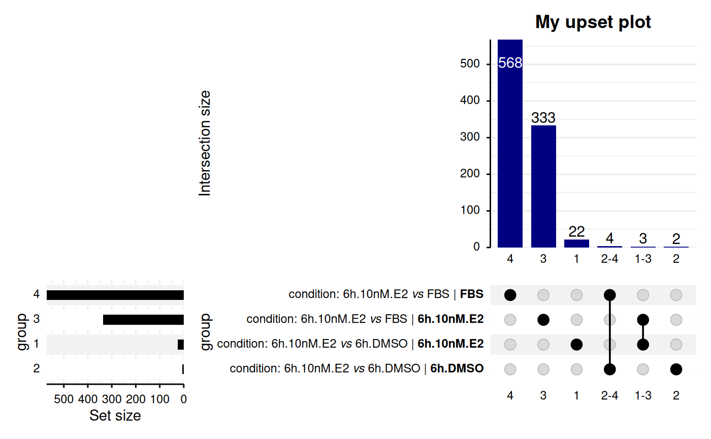

DEprot: R-package for LFQ proteomics data normalization, imputation and Differential Expression analyses
Sebastian Gregoricchio, Ph.D.
Netherlands Cancer Institute, Oncogenomics division, Amsterdam - Netherlandss.gregoricchio@nki.nl
Nils Eickhoff, Ph.D.
Netherlands Cancer Institute, Oncogenomics division, Amsterdam - Netherlandsn.eickhoff@nki.nl
Last update: 12th December, 2025
Source:vignettes/DEprot.overview.vignette.Rmd
DEprot.overview.vignette.Rmd


Introduction
The concept behind the DEprot (Differential Expression proteomics) is to provide a toolkit that allows for the normalization, imputation and analyses of the differential protein expression in proteomics data. The data are assumed to be LFQ (label-free quantitation) values.
Citation
If you use this package, please cite:
Citation
“No publication associated yet et al., XYZ (2123).
doi: XYZ/XYZ
citation("DEprot")
> To cite 'DEprot' in publications use:
>
> N. Eickhoff, A.M. Bergman, W. Zwart, S.gregoricchio. 'DEprot: a
> comprehensive R-package for the analyses of label-free quantitation
> mass-spectrometry data'. Zenodo, Volume X, Issue X (2025), Pages
> XX-YY. doi: 10.5281/zenodo.14823764
>
> A BibTeX entry for LaTeX users is
>
> @Article{,
> title = {DEprot: a comprehensive R-package for the analyses of label-free quantitation mass-spectrometry data},
> author = {Nils Eickhoff and Andries M. Bergman and Wilbert Zwart and Sebastian Gregoricchio},
> journal = {Zenodo},
> year = {2025},
> volume = {XX},
> issue = {XX},
> pages = {XX},
> url = {https://doi.org/10.5281/zenodo.14823764},
> }General workflow
Data can be loaded as raw values, pre-normalized unimputed LFQ values or, imputed LFQ values. Further, if multiple batches are available, it is possible to perform batch corrections by combining LFQ unimputed tables and load this data as “raw” in order to perform a batch harmonization.
Using normalized and imputed data, DEprot will help you
in the differential analyses as well in performing quality controls on
your data (sample correlation, principal components analyses (PCA)).

Loading the data
The package starting point is the building of a DEprot
object. This class of objects is specific to this package and requires
at least two elements:
- counts table: this must be a matrix in which the column names represent the samples while the row names identify the proteins. The values in the matrix are assumed to be LFQ (label-free quantification) values, either in linear or log-transformed format.
-
metadata: this must be a data.frame containing at least one
column names
column.idwhich values correspond to the column names of the counts_table. Any other additional column can be added (cell lines, treatment, condition, timing, etc) and used to define groups for differential and quality control (PCA and correlation) analyses.
In the next paragraph we will refer to a dataset (pre-loaded in
DEprot), in which a breast cancer (BCa) cell line was
cultured in either hormone-deprived media or in full media (FBS). If
cultured in hormone-deprived condition, it was then treated for 6 hrs
with either
-estradiol
(E2) or vehicle (DMSO). 4 biological replicates have been analyzed.
Hence, the datasets consists of 1 cell lines x 3 conditions x 4
replicates, for a total of 12 sample. Proteins and samples have been
“anonymized”.
Collect pre-loaded data
The counts represent LFQ values in the log2 format and are not-imputed.
# Metadata
data("sample.config", package = "DEprot")
sample.config| column.id | sample.id | cell | condition | combined.id | replicate |
|---|---|---|---|---|---|
| Sample_A | BCa_FBS_rep1 | BCa | FBS | BCa_FBS | rep1 |
| Sample_B | BCa_6h.DMSO_rep1 | BCa | 6h.DMSO | BCa_6h.DMSO | rep1 |
| Sample_C | BCa_6h.10nM.E2_rep1 | BCa | 6h.10nM.E2 | BCa_6h.10nM.E2 | rep1 |
| Sample_D | BCa_FBS_rep2 | BCa | FBS | BCa_FBS | rep2 |
| Sample_E | BCa_6h.DMSO_rep2 | BCa | 6h.DMSO | BCa_6h.DMSO | rep2 |
| Sample_F | BCa_6h.10nM.E2_rep2 | BCa | 6h.10nM.E2 | BCa_6h.10nM.E2 | rep2 |
| Sample_G | BCa_FBS_rep3 | BCa | FBS | BCa_FBS | rep3 |
| Sample_H | BCa_6h.DMSO_rep3 | BCa | 6h.DMSO | BCa_6h.DMSO | rep3 |
| Sample_I | BCa_6h.10nM.E2_rep3 | BCa | 6h.10nM.E2 | BCa_6h.10nM.E2 | rep3 |
| Sample_J | BCa_FBS_rep4 | BCa | FBS | BCa_FBS | rep4 |
| Sample_K | BCa_6h.DMSO_rep4 | BCa | 6h.DMSO | BCa_6h.DMSO | rep4 |
| Sample_L | BCa_6h.10nM.E2_rep4 | BCa | 6h.10nM.E2 | BCa_6h.10nM.E2 | rep4 |
# log2(LFQ) values (not imputed)
data("unimputed.counts", package = "DEprot")
head(unimputed.counts[,1:6])| Sample_A | Sample_B | Sample_C | Sample_D | Sample_E | Sample_F | |
|---|---|---|---|---|---|---|
| protein.1 | 17.8663 | 18.4581 | 18.7380 | 18.1438 | 18.7811 | 19.3043 |
| protein.2 | 22.5238 | 22.9057 | 23.0183 | 22.3577 | 23.0094 | 23.1491 |
| protein.3 | 16.1388 | 15.3720 | 15.2374 | 17.0161 | 15.5452 | 15.7899 |
| protein.4 | 21.0189 | 21.0513 | 21.0460 | 21.2229 | 21.3352 | 21.0178 |
| protein.5 | 19.1038 | 19.4950 | 19.5529 | 18.5697 | 19.3690 | 19.5156 |
| protein.6 | 15.8377 | 15.4202 | 15.4765 | 15.9765 | 15.3439 | 15.2335 |
Build DEprot object
Now we will combine the the counts and metadata to create a
DEprot object (hereafter defined as dpo).
Notice that another import information is whether the data are log
transformed, and if yes, which is the log base. Recommended
transformation is the log2(score + 1).
If data are pre-normalized and/or pre-imputed, it can be indicated
with the corresponding parameters data.type and any
information about the method used that you would like to store in the
object can be added using the corresponding parameters
normalization.method and
imputation.method.
Ultimately, if the metadata table does not contain a
column.id column corresponding to the row names of the
counts_table, it is possible to indicate the name of
another column that should be assumed as to be the
column.id.
dpo <- load.counts2(counts = unimputed.counts,
metadata = sample.config,
data.type = "raw",
log.base = 2,
column.id = "column.id")
dpo
> DEprot object:
> Samples: 12
> Proteins: 12944
> Counts available: raw
> Log transformation: log2
> Metadata columns: column.id, sample.id, cell, condition, combined.id, replicateDEprot. The S4-vectors
are containers of slots that can be accessed using the symbol
@ (e.g., object@slot.id.The structure of an object of class
DEprot (and
DEprot.analyses) is the following:
| Slot | Description |
|---|---|
| raw.counts | table containing the raw counts, if not available it
will be NULL
|
| norm.counts | table containing the normalized counts, if not
available it will be NULL
|
| imputed.counts | table containing the imputed counts, if not available
it will be NULL
|
| log.base | a number indicating the base of the log used to
transform the table, if not available it will be NA
|
| log.transformed | logical value indicating whether the data are log-transformed or not |
| imputed | logical value indicating whether the data are imputed or not |
| imputation | discussed further in the Imputation paragraph |
| normalized | logical value indicating whether the data are normalized or not |
| normalization.method | a string indicating the type of normalization applied,
if not available it will be NA
|
| boxplot.raw | box+violin plot of the distribution of the LFQ intensities per sample obtained from the raw counts |
| boxplot.norm | box+violin plot of the distribution of the LFQ intensities per sample obtained from the normalized counts |
| boxplot.imputed | box+violin plot of the distribution of the LFQ intensities per sample obtained from the imputed counts |
| analyses.result.list | discussed further in the Differential Expression analyses paragraph |
| contrasts | discussed further in the Differential Expression analyses paragraph |
| differential.analyses.params | discussed further in the Differential Expression analyses paragraph |
Rename sample columns
As in our example, sometimes the columns of the counts are not the
actual ID of the samples, but rather an identifier. However, it is
possible to rename the counts column names indicating any column of the
metadata table (having unique values). The original identifiers are
stored in a new column (old.column.id) of the
metadata.
Notice that the renaming will applied to all counts
table available.
dpo <- rename.samples(DEprot.object = dpo,
metadata.column = "sample.id")
get.metadata(dpo)
> column.id sample.id cell condition combined.id
> 1 BCa_FBS_rep1 BCa_FBS_rep1 BCa FBS BCa_FBS
> 2 BCa_6h.DMSO_rep1 BCa_6h.DMSO_rep1 BCa 6h.DMSO BCa_6h.DMSO
> 3 BCa_6h.10nM.E2_rep1 BCa_6h.10nM.E2_rep1 BCa 6h.10nM.E2 BCa_6h.10nM.E2
> 4 BCa_FBS_rep2 BCa_FBS_rep2 BCa FBS BCa_FBS
> 5 BCa_6h.DMSO_rep2 BCa_6h.DMSO_rep2 BCa 6h.DMSO BCa_6h.DMSO
> 6 BCa_6h.10nM.E2_rep2 BCa_6h.10nM.E2_rep2 BCa 6h.10nM.E2 BCa_6h.10nM.E2
> 7 BCa_FBS_rep3 BCa_FBS_rep3 BCa FBS BCa_FBS
> 8 BCa_6h.DMSO_rep3 BCa_6h.DMSO_rep3 BCa 6h.DMSO BCa_6h.DMSO
> 9 BCa_6h.10nM.E2_rep3 BCa_6h.10nM.E2_rep3 BCa 6h.10nM.E2 BCa_6h.10nM.E2
> 10 BCa_FBS_rep4 BCa_FBS_rep4 BCa FBS BCa_FBS
> 11 BCa_6h.DMSO_rep4 BCa_6h.DMSO_rep4 BCa 6h.DMSO BCa_6h.DMSO
> 12 BCa_6h.10nM.E2_rep4 BCa_6h.10nM.E2_rep4 BCa 6h.10nM.E2 BCa_6h.10nM.E2
> replicate old.column.id
> 1 rep1 Sample_A
> 2 rep1 Sample_B
> 3 rep1 Sample_C
> 4 rep2 Sample_D
> 5 rep2 Sample_E
> 6 rep2 Sample_F
> 7 rep3 Sample_G
> 8 rep3 Sample_H
> 9 rep3 Sample_I
> 10 rep4 Sample_J
> 11 rep4 Sample_K
> 12 rep4 Sample_Lhead(dpo@raw.counts[,1:6])
> BCa_FBS_rep1 BCa_6h.DMSO_rep1 BCa_6h.10nM.E2_rep1 BCa_FBS_rep2
> protein.1 17.8663 18.4581 18.7380 18.1438
> protein.2 22.5238 22.9057 23.0183 22.3577
> protein.3 16.1388 15.3720 15.2374 17.0161
> protein.4 21.0189 21.0513 21.0460 21.2229
> protein.5 19.1038 19.4950 19.5529 18.5697
> protein.6 15.8377 15.4202 15.4765 15.9765
> BCa_6h.DMSO_rep2 BCa_6h.10nM.E2_rep2
> protein.1 18.7811 19.3043
> protein.2 23.0094 23.1491
> protein.3 15.5452 15.7899
> protein.4 21.3352 21.0178
> protein.5 19.3690 19.5156
> protein.6 15.3439 15.2335Data normalization
When a DEprot object is loaded, automatically a
box/violin plot showing the distribution of the LFQ values per samples
is generated.
This representation is useful to estimate whether
the data are normalized or not. Boxplots display the quantiles of the
LFQ intensities, while red and blue dashed lines correspond to maximum
and minimum LFQ value for each sample.
dpo@boxplot.raw
In this package we apply the Modified Balanced Quantile Normalization
(MBQN) from the MBQN
package and developed by E.Brombacher et
al. (Proteomics, 2020). The modification balances the
median (or mean) intensity of features (rows) which are rank invariant
(RI) or nearly rank invariant (NRI) across samples (columns) before
quantile normalization. This prevents an over-correction of the
intensity profiles of RI and NRI features by classical quantile
normalization and therefore supports the reduction of systematics in
downstream analyses.
dpo <- normalize.counts(DEprot.object = dpo,
NRI.RI.ratio.threshold = 0.5,
balancing.function = "median")
dpo
> DEprot object:
> Samples: 12
> Proteins: 12944
> Counts available: raw, normalized
> Log transformation: log2
> Metadata columns: column.id, sample.id, cell, condition, combined.id, replicate, old.column.iddpo@normalization.method
> param value
> 1 package MBQN
> 2 method Quantile normalization
> 3 balanced TRUE
> 4 function median
> 5 NRI/RI ratio threshold 0.5head(dpo@raw.counts[,1:6])
> BCa_FBS_rep1 BCa_6h.DMSO_rep1 BCa_6h.10nM.E2_rep1 BCa_FBS_rep2
> protein.1 17.8663 18.4581 18.7380 18.1438
> protein.2 22.5238 22.9057 23.0183 22.3577
> protein.3 16.1388 15.3720 15.2374 17.0161
> protein.4 21.0189 21.0513 21.0460 21.2229
> protein.5 19.1038 19.4950 19.5529 18.5697
> protein.6 15.8377 15.4202 15.4765 15.9765
> BCa_6h.DMSO_rep2 BCa_6h.10nM.E2_rep2
> protein.1 18.7811 19.3043
> protein.2 23.0094 23.1491
> protein.3 15.5452 15.7899
> protein.4 21.3352 21.0178
> protein.5 19.3690 19.5156
> protein.6 15.3439 15.2335Also in this case a box/violin plot with the corresponding normalized LFQ values per each sample is generated and stored in a vector slot.
patchwork::wrap_plots(dpo@boxplot.raw, dpo@boxplot.norm, nrow = 1)
Batch effect correction
Proteomics is highly susceptible to batch effects. Hereafter we use
the package HarmonizR
package, developed by H.Voß &
S.Schlumbohm (Nat.Commun., 2022). This tool besides
handling multiple experiments, allows for the batch correction of data
derived by the combination of both DIA (Data-Independent Acquisition)
and DDA (Data-Dependent Acquisition).
HarmonizRis not a required dependency, therefore if this function is used andHarmonizRis not already installed, a warning will indicate the required installation. The package can be installed by:BiocManager::install("HarmonizR"), or alternativelydevtools::install_github("https://github.com/SimonSchlumbohm/HarmonizR/", subdir = "HarmonizR").
To use the harmonize.batches is sufficient to provide a
DEprot object containing a combined table of multiple
experiments and indicate the identifier of a column in the metadata
table which corresponds to the batch annotation. The result is a DEprot
object with the same structure described in the previous paragraph.
Here, for simplicity, we will add manually a column to the metadata
table with “dummy” batches.
## Adding batch column to the metadata table
dpo@metadata$batch = rep(c("batch_1","batch_2"), each = 6)
get.metadata(dpo)> column.id sample.id cell condition combined.id
> 1 BCa_FBS_rep1 BCa_FBS_rep1 BCa FBS BCa_FBS
> 2 BCa_6h.DMSO_rep1 BCa_6h.DMSO_rep1 BCa 6h.DMSO BCa_6h.DMSO
> 3 BCa_6h.10nM.E2_rep1 BCa_6h.10nM.E2_rep1 BCa 6h.10nM.E2 BCa_6h.10nM.E2
> 4 BCa_FBS_rep2 BCa_FBS_rep2 BCa FBS BCa_FBS
> 5 BCa_6h.DMSO_rep2 BCa_6h.DMSO_rep2 BCa 6h.DMSO BCa_6h.DMSO
> 6 BCa_6h.10nM.E2_rep2 BCa_6h.10nM.E2_rep2 BCa 6h.10nM.E2 BCa_6h.10nM.E2
> 7 BCa_FBS_rep3 BCa_FBS_rep3 BCa FBS BCa_FBS
> 8 BCa_6h.DMSO_rep3 BCa_6h.DMSO_rep3 BCa 6h.DMSO BCa_6h.DMSO
> 9 BCa_6h.10nM.E2_rep3 BCa_6h.10nM.E2_rep3 BCa 6h.10nM.E2 BCa_6h.10nM.E2
> 10 BCa_FBS_rep4 BCa_FBS_rep4 BCa FBS BCa_FBS
> 11 BCa_6h.DMSO_rep4 BCa_6h.DMSO_rep4 BCa 6h.DMSO BCa_6h.DMSO
> 12 BCa_6h.10nM.E2_rep4 BCa_6h.10nM.E2_rep4 BCa 6h.10nM.E2 BCa_6h.10nM.E2
> replicate old.column.id batch
> 1 rep1 Sample_A batch_1
> 2 rep1 Sample_B batch_1
> 3 rep1 Sample_C batch_1
> 4 rep2 Sample_D batch_1
> 5 rep2 Sample_E batch_1
> 6 rep2 Sample_F batch_1
> 7 rep3 Sample_G batch_2
> 8 rep3 Sample_H batch_2
> 9 rep3 Sample_I batch_2
> 10 rep4 Sample_J batch_2
> 11 rep4 Sample_K batch_2
> 12 rep4 Sample_L batch_2
## batch correction
dpo <- harmonize.batches(DEprot.object = dpo,
batch.column = "batch",
cores = 1)Data imputation
Often many NA/NaN values are present in the
LFQ tables due to the technical limitations of the protein detection by
Mass Spectrometry (MS) experiments.
Here we provide the possibility to use 9 different methods for the imputation the data:
-
missForest: developed by DJ.Stekhoven & P.Buehlmann (Bioinformatics, 2012), this tool will impute the NaN and assign and estimated value. It also yields an out-of-bag (OOB) imputation error estimate (general, or per each sample). Moreover, it can be run parallel to save computation time (both examples reported here after). - k-Nearest Neighbors (kNN) algorithm
- correlation-Nearest Neighbors (corkNN) algorithm
- truncated-Nearest Neighbors (tkNN) algorithm
- Local Least Squares (LLS) imputation, using the pearson correlation coefficient
- Singular Value Decomposition (SVD)
- Glmnet ridge regression (RegImpute, from DreamAI)
- Probabilistic Principal Component Analysis (PPCA)
- Bayesian Principal Component Analysis (BPCA)
Of note, there are cases in which the missing data are not due to the
random but rather consequent to real biological effects (i.e.,
knock-down, knock-out, degron systems and PROTACs, etc.). This may lead
to the issue that a protein completely missing in all the replicates of
an individual condition will be imputed with relatively high numbers.
This would ultimately lead to the incorrect definition of the
differential status of this protein. To overcome this possibility, it is
possible to use the function randomize.missing.values to
assign random values from the bottom distribution of the full dataset.
The user can define a percentage threshold of minimal missing values
within the group; for instance if the threshold is 75% and in each group
there are 4 samples, it means that only proteins with at least 3 out of
4 missing values will be imputed. It will be sufficient to indicate the
ID of a column belonging to the metadata which indicates the
groups/conditions and the percentage of distribution from which select
random numbers (“tail.percentage”).
dpo <- randomize.missing.values(DEprot.object = dpo,
group.column = "combined.id",
percentage.missing = 100, # completely missing
tail.percentage = 3)Using the
"column.id"as group.column is equivalent to impute all the data with this method.
Hereafter, an example in how to use the missForest
method to impute the data:
## Without parallelization
dpo <- impute.counts(DEprot.object = dpo,
method = "missForest",
use.normalized.data = TRUE,
missForest.max.iterations = 100,
missForest.variable.wise.OOBerror = T)
## With parallelization
dpo <- impute.counts(DEprot.object = dpo,
method = "missForest",
use.normalized.data = TRUE,
missForest.max.iterations = 100,
missForest.variable.wise.OOBerror = TRUE,
missForest.cores = 10,
missForest.parallel.mode = "variables")
dpo
head(dpo@imputation$OOBerror)
data.frame(dpo@imputation[-3])> DEprot object:
> Samples: 12
> Proteins: 12692
> Counts available: raw, normalized, imputed
> Log transformation: log2
> Metadata columns: column.id, sample.id, cell, condition, combined.id, replicate, old.column.id, batch> BCa_FBS_rep1 BCa_6h.DMSO_rep1 BCa_6h.10nM.E2_rep1 BCa_FBS_rep2
> 0 0 0 0
> BCa_6h.DMSO_rep2 BCa_6h.10nM.E2_rep2
> 0 0| method | max.iterations | parallelization.mode | cores | processing.time | seed |
|---|---|---|---|---|---|
| missForest | 100 | variables | 10 | 47.69 mins | 1554189635 |
Also in this case a box/violin plot with the corresponding imputed LFQ values per each sample is generated and stored in a vector slot.
patchwork::wrap_plots(dpo@boxplot.raw, dpo@boxplot.norm, dpo@boxplot.imputed, nrow = 1)
Sample similarities
Principal Component Analyses (PCA)
PCA can be performed in order to perform a dimensional reduction and
determine which factor explains the variability of the samples.DEprot includes function dedicated to this aim and
specifically build to work with DEprot objects.
Notice that, even if the data are not log-transformed,
perform.PCA will do it before performing the analyses.
Compute PCs
## Perform the analyses (DEprot.PCA object)
PCA <- perform.PCA(DEprot.object = dpo,
which.data = "imputed") # possible: raw, normalized, imputedThe DEprot.PCA object contains the following slots:
| Slot | Description |
|---|---|
| PCA.metadata | metadata of the samples used in the PCA (subset of the
original DEprot@metadata) |
| sample.subset | vector containing the list of samples analyzed |
| data.used | vector indicating the type of counts used (imputed, normalized, raw) |
| prcomp | object of class prcomp corresponding to
the full PCA output |
| PCs |
data.frame combining the PC scores and the
metadata table, useful for replotting |
| importance | statistical summary table for the PCA analyses per each PC |
| cumulative.PC.plot |
ggplot object corresponding to out put of
plot.PC.cumulative for this object |
Visualize PCAs
## Plot cumulative variance of all PCs
#### equivalent to `PCA@cumulative.PC.plot`
plot.PC.cumulative(DEprot.PCA.object = PCA,
bar.color = "steelblue",
line.color = "navyblue")
## Plot PC scatters
PC_1.2 <-
plot.PC.scatter(DEprot.PCA.object = PCA,
PC.x = 1,
PC.y = 2,
color.column = "condition",
shape.column = "replicate",
label.column = NULL,
plot.zero.lines = F) +
geom_hline(yintercept = 0, color = "gray", linetype = "dashed") +
theme(legend.position = "none")
PC_2.3 <-
plot.PC.scatter(DEprot.PCA.object = PCA,
PC.x = 2,
PC.y = 3,
color.column = "condition",
shape.column = "replicate",
label.column = NULL,
plot.zero.lines = TRUE)
patchwork::wrap_plots(PC_1.2, PC_2.3, nrow = 1)
Alternatively, the combination of PC1.2 and PC2.3 can be
automatically generated using the function
plot.PC.scatter.123:
plot.PC.scatter.123(DEprot.PCA.object = PCA,
color.column = "condition",
shape.column = "replicate",
label.column = "replicate",
dot.colors = c("6h.10nM.E2" = "indianred",
"6h.DMSO" = "steelblue",
"FBS" = "forestgreen"),
plot.zero.line.y.12 = TRUE,
plot.zero.line.x.12 = FALSE,
plot.zero.line.y.23 = TRUE,
plot.zero.line.x.23 = TRUE)
Analyze PCs on a sample subset
These analyses can also be performed for a subset of samples by
indicated the sample names of interest.
In the example below we
will use only the sample in which the estrogen receptor is active (E2
and FBS conditions).
## Perform the analyses (DEprot.PCA object)
PCA.fbs.e2 <-
perform.PCA(DEprot.object = dpo,
sample.subset = dpo@metadata$column.id[grepl("E2|FBS",
dpo@metadata$column.id)],
which.data = "imputed")
## Plot cumulative variance of all PCs
plot.PC.cumulative(DEprot.PCA.object = PCA.fbs.e2,
bar.color = "indianred",
line.color = "firebrick4",
title = "**Only ERa active**")
## Plot PC scatters
PC.fbs.e2_1.2 <-
plot.PC.scatter(DEprot.PCA.object = PCA.fbs.e2,
PC.x = 1,
PC.y = 2,
color.column = "condition",
shape.column = "replicate",
label.column = NULL,
plot.zero.lines = F) +
geom_hline(yintercept = 0, color = "gray", linetype = "dashed") +
theme(legend.position = "none")
PC.fbs.e2_2.3 <-
plot.PC.scatter(DEprot.PCA.object = PCA.fbs.e2,
PC.x = 2,
PC.y = 3,
color.column = "condition",
shape.column = "replicate",
label.column = NULL,
plot.zero.lines = T)
patchwork::wrap_plots(PC.fbs.e2_1.2, PC.fbs.e2_2.3, nrow = 1)
Correlations
Another method to define the sample clustering/groups, is the overall
correlation between the samples.
Hierarchical clustering is
performed using the 1 - correlation values, since the
hierarchical clustering algorithm is based on dissimilarities while the
correlations are an index of similarity.
corr.all.samples <-
plot.correlation.heatmap(DEprot.object = dpo,
which.data = "imputed",
palette = viridis::mako(n = 10, direction = -1, begin = 0.25),
correlation.scale.limits = c(0.9,1),
correlation.method = "pearson",
plot.subtitle = "All samples",
display.values = TRUE)
corr.all.samples
Also in this case the sample correlation can be computed for a subset of samples as shown before for the PCAs.
corr.ERa.active <-
plot.correlation.heatmap(DEprot.object = dpo,
which.data = "imputed",
sample.subset = dpo@metadata$column.id[grepl("E2|FBS",
dpo@metadata$column.id)],
palette = viridis::magma(n = 10, direction = -1, begin = 0.25),
correlation.scale.limits = c(0.9,1),
correlation.method = "pearson",
plot.subtitle = "Only ERa active",
clustering.method = "complete",
display.values = TRUE)
corr.ERa.activeThe DEprot.correlation correlation object contains the
following slots:
| Slot | Description |
|---|---|
| heatmap |
ggplot object corresponding to the
correlation heatmap |
| corr.metadata | metadata of the samples used in the correlation (subset
of the original DEprot@metadata) |
| sample.subset | vector containing the list of samples analyzed |
| data.used | vector indicating the type of counts used (imputed, normalized, raw) |
| corr.matrix | the correlation matrix on which the heatmap is base on |
| distance | object of class dist corresponding to the
output of as.dist(1 - correlation.matrix)
|
| cluster |
hclust object generated by
hclust(d = as.dist(1 - correlation.matrix), method = clustering.method)
|
Differential Expression (DE) analyses
Differential expression analyses between two conditions can be
performed employing two different methods using the functions
diff.analyses and diff.analyses.limma. With
the first (diff.analyses) the conditions will be compared
two-by-two (individual t-/Wilcox tests), while with the second
(diff.analyses.limma) the limma package is
used to fit the data on a linear model.
In both cases, it is sufficient to provide a list of 3-elements
vectors. The latter, should indicate any column of the metadata table
(grouping factor) and two values (groups) to compare within this column.
The first variable will be numerator and the second the denominator of
the fold change:
c("group.column", "condition.A", "condition.B"), FoldChange
= group A/B.
When a replicate column is available, it is possible to run the
analyses in paired mode. When using diff.analyses,
it is sufficient to indicate the column from the metadata table that
corresponds to the replicate identifiers (in our example
replicate.column = "replicate") and set
paired.test = TRUE. For each contrast it will be verified
that replicate identifiers are not repeated within a group and, that
replicate number and identifiers coincide between the two groups. By the
default analyses ignore the replicates.
If
diff.analyses.limma is used instead, the correlation
between replicates will be estimated and incorporated in the fitting
model. In this case indicate the replicate column identifier (in our
example replicate.column = "replicate") and set
include.rep.model = TRUE.
In the following example we will compare 6h.10nM.E2 vs 6h.DMSO, and 6h.10nM.E2 vs FBS. Both paired and unpaired examples are shown, but further analyses are based on the paired results only (multi t-test mode).
Differential analyses algorithms
limma mode
Verify normality of the data
The main assumption to run limma is that the data are
normally distributed. For this reason is good practice verify that the
data are normally distributed for each sample. This can be accomplished
using the function check.normality. It will return a S4
vector composed by:
-
norm.statement: logical value indicating whether all the samples are normally distributed (TRUE) or not (FALSE); -
norm.AD.tests: list of Anderson-Darling normality test outputs (statistics, p-value, etc; -
qqplots: a list of Q-Q plots (ggplot objects) showing the “correlation” between the distribution of your data and the theoretical normal distribution -
densities: a list of density curves (ggplot objects) depicted the distribution of your data and the overlay with the theoretical normal distribution.
When a sample is not normally distributed (p-value of the AD normality test < p.threshold) the plot will be red instead of black/blue. Furthermore, a message will tell if all samples are normally distributed; and if not, which ones are not normally distributed.
normality <- check.normality(DEprot.object = dpo,
p.threshold = 0.05,
which.data = "imputed",
verbose = T)
> All samples display a normal distribution.
## example of Q-Q and density plots
patchwork::wrap_plots(normality@qqplots[[1]], normality@densities[[1]])Run analyses with limma
## Unpaired test
dpo_analyses <- diff.analyses.limma(DEprot.object = dpo,
contrast.list = list(c("condition", "6h.10nM.E2", "6h.DMSO"),
c("condition", "6h.10nM.E2", "FBS")),
linear.FC.th = 2,
padj.th = 0.05,
padj.method = "BH",
fitting.method = "ls",
which.data = "imputed")
## Paired test
dpo_analyses <- diff.analyses.limma(DEprot.object = dpo,
contrast.list = list(c("condition", "6h.10nM.E2", "6h.DMSO"),
c("condition", "6h.10nM.E2", "FBS")),
replicate.column = "replicate",
include.rep.model = TRUE,
linear.FC.th = 2,
padj.th = 0.05,
padj.method = "BH",
fitting.method = "ls",
which.data = "imputed")Multiple t-test mode
Next paragraphs use these results, in paired mode
## Unpaired test
dpo_analyses <- diff.analyses(DEprot.object = dpo,
contrast.list = list(c("condition", "6h.10nM.E2", "6h.DMSO"),
c("condition", "6h.10nM.E2", "FBS")),
linear.FC.th = 2,
padj.th = 0.05,
padj.method = "BH",
stat.test = "t.test",
which.data = "imputed")
## Paired test
dpo_analyses <- diff.analyses(DEprot.object = dpo,
contrast.list = list(c("condition", "6h.10nM.E2", "6h.DMSO"),
c("condition", "6h.10nM.E2", "FBS")),
replicate.column = "replicate",
paired.test = TRUE,
linear.FC.th = 2,
padj.th = 0.05,
padj.method = "BH",
stat.test = "t.test",
which.data = "imputed")
dpo_analyses> DEprot.analyses object:
> Counts used: imputed
> Fold Change threshold: 2 (linear)
> FC unresponsive range: [0.9090909,1.1] (linear)
> padj threshold: 0.05 (linear)
> padj method: BH
>
>
> Differential results summary:
> contrast.id group.factor group1 group2 paired.test
> 1 condition: 6h.10nM.E2 vs 6h.DMSO condition 6h.10nM.E2 6h.DMSO TRUE
> 2 condition: 6h.10nM.E2 vs 6h.DMSO condition 6h.10nM.E2 6h.DMSO TRUE
> 3 condition: 6h.10nM.E2 vs 6h.DMSO condition 6h.10nM.E2 6h.DMSO TRUE
> 4 condition: 6h.10nM.E2 vs 6h.DMSO condition 6h.10nM.E2 6h.DMSO TRUE
> 5 condition: 6h.10nM.E2 vs FBS condition 6h.10nM.E2 FBS TRUE
> 6 condition: 6h.10nM.E2 vs FBS condition 6h.10nM.E2 FBS TRUE
> 7 condition: 6h.10nM.E2 vs FBS condition 6h.10nM.E2 FBS TRUE
> 8 condition: 6h.10nM.E2 vs FBS condition 6h.10nM.E2 FBS TRUE
> diff.status n median.FoldChange
> 1 6h.DMSO 0 NA
> 2 6h.10nM.E2 0 NA
> 3 unresponsive 8640 -0.000650564
> 4 null 4052 0.138645880
> 5 FBS 415 -1.293597142
> 6 6h.10nM.E2 253 1.232724711
> 7 unresponsive 2155 -0.011973627
> 8 null 9869 -0.235058768The summary can be collected by using the generic function
summary:
diff.analyses_summary = summary(dpo)DE results
The output will be a DEprot.analyses object. This class
is similar to the base DEprot one, however 3 slots are now
available:
- contrasts: corresponds to the list used to define the contrasts, but includes also the IDs of the counts matrix belonging to each subgroup and whether the statistical test was performed in paired mode.
- differential.analyses.params: a list containing the core parameters used for the differential expression analyses.
- analyses.result.list: a list with an element for each contrast including all the results of the differential analyses (see below for details).
The analyses.result.list, for each contrast, stores a
list with the following elements:
| Element | Description |
|---|---|
| results | a data.frame containing the results of the analyses; includes average expression of each group, basemean, foldchange, pvalue and p.adj, differential.status |
| n.diff | a summary table showing the number of proteins in each differential expression status (up/down/unresponsive, null) |
| PCA.data | output of perform.PCA for the subset of
samples analyzed in a specific contrast |
| PCA.plots | combination of 3 plots: scatter PC1-vs-PC2, scatter PC2-vs-PC3, and cumulative bar plot |
| correlations | combination of Pearson and Spearman correlation
heatmaps (obtained by plot.correlation.heatmap) for the
subset of samples analyzed in a specific contrast |
| volcano | volcano plot showing the log2(FoldChange) x
-log10(p.adjusted) of differential expression results; it can be
regenerated using plot.volcano
|
| MA.plot | MA-plot showing the log2(basemean) x log2(FoldChange)
of differential expression results; it can be regenerated using
plot.MA
|
If the function diff.analyses.limma was used, an
additional slot called limma.fit will be available and will
contain the results of limma::contrasts.fit.
The full object can be automatically exported - including tables,
PCA, correlations, volcano and MA-plots, etc. - using the built-in
function export.analyses:
export.analyses(DEprot.analyses.object = dpo_analyses, output.folder = "./export")DE table
The table with the results of the differential analyses can be
retrieved directly from the list in the DEprot.analyses
object
(dpo_analyses@analyses.result.list$contrast.id$results) or
using the get.results function.
## Direct access
results = dpo_analyses@analyses.result.list$condition_6h.10nM.E2.vs.6h.DMSO$results
## Function
results = get.results(dpo_analyses, contrast = 1)
head(results)| prot.id | basemean.log2 | log2.mean.6h.10nM.E2 | log2.mean.6h.DMSO | log2.Fold_6h.10nM.E2.vs.6h.DMSO | p.value | padj | diff.status |
|---|---|---|---|---|---|---|---|
| protein.1 | 18.82259 | 18.87524 | 18.76995 | 0.1052937 | 0.6525152 | 0.9373013 | unresponsive |
| protein.2 | 23.05429 | 23.06756 | 23.04102 | 0.0265348 | 0.7961895 | 0.9640562 | unresponsive |
| protein.3 | 15.67194 | 15.63737 | 15.70651 | -0.0691479 | 0.5797026 | 0.9195075 | unresponsive |
| protein.4 | 21.14449 | 21.10038 | 21.18860 | -0.0882180 | 0.2850665 | 0.8414855 | unresponsive |
| protein.5 | 19.54217 | 19.59634 | 19.48800 | 0.1083424 | 0.0552216 | 0.7276195 | unresponsive |
| protein.6 | 15.28886 | 15.29176 | 15.28595 | 0.0058098 | 0.9302923 | 0.9928526 | unresponsive |
PCA and correlation within the comparison
The DEprot.analyses object includes PCA and correlation
analyses of the samples involved in the contrast.
dpo_analyses@analyses.result.list$condition_6h.10nM.E2.vs.6h.DMSO$PCA.plots
dpo_analyses@analyses.result.list$condition_6h.10nM.E2.vs.6h.DMSO$correlations
Visualize DE analyses
P-values distributions
Good practice is to visualize the distribution of the p-values and
compare it with the adjusted ones in order to estimate the quality of
the statistical tools used. In the histograms, the horizontal dashed
line indicates the median of the frequency, while the vertical dotted
line demarcates the P-value threshold used for the differential
analyses.
This can be performed using the
check.pvalues function:
pval.distribution <- check.pvalues(DEprot.analyses.object = dpo_analyses,
contrast = 2,
histogram.binwidth = 0.025)
pval.distribution
MA and volcano
Differential expressed proteins can be visualized as either a volcano
plot or an MA-plot.
Both these plots are available in the
dpo_analyses@analyses.result.list$contrast.id list, but can
also be generated using the functions plot.volcano and
plot.MA.
Of note, if
use.uncorrected.pvalue = TRUE, the normal p-value will be used instead of the p.adjusted. In this case the FoldChange and p-value thresholds are collected from theDEprot.analysesobject and reapplied to compute the new differential status of the proteins.
volcano = plot.volcano(dpo_analyses, contrast = 1, use.uncorrected.pvalue = TRUE)
MAplot = plot.MA(dpo_analyses, contrast = 1, use.uncorrected.pvalue = TRUE)
patchwork::wrap_plots(volcano, MAplot)
Correlation between contrasts
Using the function contrast.scatter it is possible to
visualize the log2(Fold Change) correlation between two
contrasts of a differential expression analyses object.
contrast.scatter <-
contrast.scatter(DEprot.analyses.object = dpo_analyses,
contrast.x = 1,
contrast.y = 2,
regression.line.color = "firebrick",
correlation.method = "pearson",
add.foldchange.threshold = TRUE,
symmetric.axes = TRUE)
contrast.scatterScatter between average-LFQ values for one contrast
Using the function contrast.LFQ it is possible to plot a
scatter of the average LFQ values for the two conditions involved in a
specific contrast. dots will be colored by log2(Fold Change),
while the size corresponds to the P-value adjusted (or FRD is
prolfqua is used).
contrast_LFQ <-
contrast.LFQ(DEprot.analyses.object = dpo_analyses,
contrast = 2,
dot.labels = "protein.3081")
contrast_LFQHeatmaps
To plot results heatmaps there are two functions available:
-
heatmap.counts: allows for the plotting of raw, normalized or imputed counts. -
heatmap.contrasts: allows for the plotting of log2(FoldChange) values.
Counts
With the heatmap.counts function it is possible to
generate an heatmap for the raw/normalized/imputed counts. It is
possible to select only specific proteins and/or subset samples (from
column.id column in metadata table). If the object provided
is a DEprot.analyses object, it is also possible to
indicate to plot only differential proteins (or top.n differential
proteins) from a specific contrast.
The protein ranking
definition is based on the differential score, computed as:
abs(log2(fold change)) * -log10(Padj).
The resulting object is of class DEprot.counts.heatmap,
and contains the ggplot-heatmap, the row cluster and the column
cluster.
## Plotting from a DEprot object
imputed_counts_heatmap <-
heatmap.counts(DEprot.object = dpo,
which.data = "imputed",
sample.subset = dpo@metadata$column.id[grep("6h", dpo@metadata$column.id)],
show.protein.names = TRUE,
protein.subset = c("protein.2295", "protein.304", "protein.657",
"protein.2819", "protein.2168", "protein.10594"),
title = "Imputed counts | protein and sample selection")
## Plotting from a DEprot.analyses object
## top 15 differential proteins from contrast 1
imputed_counts_heatmap_diffProteins <-
heatmap.counts(DEprot.object = dpo_analyses,
which.data = "imputed",
contrast = 1,
top.n = 15,
palette = viridis::mako(n = 100, direction = -1),
cell.border.color = "white",
show.protein.names = TRUE,
sample.subset = dpo@metadata$column.id[grep("6h", dpo@metadata$column.id)],
use.uncorrected.pvalue = TRUE,
protein.names.pattern = "protein[.]",
title = "condition: **6h.10nM.E2** *vs* **6h.DMSO** (top 15) | Imputed counts")
## Combine heatmaps
patchwork::wrap_plots(imputed_counts_heatmap@heatmap,
imputed_counts_heatmap_diffProteins@heatmap)Instead of “pure” counts, it is possible to compute Z-scores of the
values and plot a divergent heatmap.
In this case instead of a
palette, it will be required to indicate the color for the positive,
negative and 0 values.
We will apply this to the
imputed_counts_heatmap_diffProteins heatmap from the
previous example.
## Z-score by row
imputed_counts_heatmap_diffProteins_rowScaled <-
heatmap.counts(DEprot.object = dpo_analyses,
which.data = "imputed",
contrast = 1,
top.n = 15,
high.color = "purple4",
low.color = "darkorange",
mid.color = "white",
cell.border.color = "white",
show.protein.names = TRUE,
sample.subset = dpo@metadata$column.id[grep("6h", dpo@metadata$column.id)],
use.uncorrected.pvalue = TRUE,
scale = "rows",
title = "condition: **6h.10nM.E2** *vs* **6h.DMSO** (top 15)<br>Imputed counts Z-score")
## Z-score by column
imputed_counts_heatmap_diffProteins_columnScaled <-
heatmap.counts(DEprot.object = dpo_analyses,
which.data = "imputed",
contrast = 1,
top.n = 15,
high.color = "firebrick",
low.color = "steelblue",
mid.color = "white",
cell.border.color = "white",
show.protein.names = TRUE,
sample.subset = dpo@metadata$column.id[grep("6h", dpo@metadata$column.id)],
use.uncorrected.pvalue = TRUE,
scale = "columns",
title = "condition: **6h.10nM.E2** *vs* **6h.DMSO** (top 15)<br>Imputed counts Z-score")
## Combine heatmaps
patchwork::wrap_plots(imputed_counts_heatmap_diffProteins_rowScaled@heatmap,
imputed_counts_heatmap_diffProteins_columnScaled@heatmap)
Ultimately, With this function is also possible to group data based on the values of a metadata’s column. In this way it is possible to average the values by the values of the defined column (e.g., the replicates of a condition).
In the next example we will average the replicates of each condition
using the combined.id column form the metadata of the
dpo_analyses object.
imputed_counts_heatmap_diffProteins_rowScaled_grouped.by.condition <-
heatmap.counts(DEprot.object = dpo_analyses,
group.by.metadata.column = "combined.id",
which.data = "imputed",
contrast = 1,
high.color = "firebrick",
low.color = "steelblue",
mid.color = "white",
cell.border.color = "white",
show.protein.names = TRUE,
use.uncorrected.pvalue = TRUE,
scale = "rows",
title = "condition: **6h.10nM.E2** *vs* **6h.DMSO** (all)<br>Imputed counts Z-score")
imputed_counts_heatmap_diffProteins_rowScaled_grouped.by.condition@heatmapFold changes
Instead of counts, it is possible to plot the fold changes of one or
multiple contrasts using the function heatmap.contrasts.
Only differential proteins are shown.
Also in this case it is
possible to show only the top N differential proteins. However
the top N of each contrast will be shown. This means than
N proteins might be shown.
FC_heatmap <-
heatmap.contrasts(DEprot.analyses.object = dpo_analyses,
contrasts = c(1:2),
top.n = 20,
high.color = "#35978F",
low.color = "#BF812D",
mid.color = "white",
show.protein.names = TRUE,
use.uncorrected.pvalue = TRUE,
protein.names.pattern = "protein[.]")
FC_heatmap@heatmapUpset-plot
To identify which differential proteins are common among multiple
comparisons, it is possible to generate an upset plot using the function
plot.upset. With this function all the intersections
between all the contrasts including in the provided object can be
visualized by co-occurrence. It is also possible to subset only specific
contrasts indicating a numeric vector in the flag
sort.intersections.
upset.plot <- plot.upset(DEprot.analyses.object = dpo_analyses,
contrast.subset = c(1,2),
title = "**My upset plot**",
sort.intersections = "cardinality",
sort.sets = "descending",
intersection.bar.color = "navy",
setsize.bar.color = "black",
show.counts = T,
height.ratio = 0.5,
width.ratio = 0.4,
use.uncorrected.pvalue = TRUE)
upset.plot # or upset.plot@upset
Besides the plot, also a TRUE/FALSE table
is returned. The latter shows for each condition if a protein has been
found to be differential. Only proteins that are differential in at
least one condition are shown.
upset.plot@obs.matrix| prot.id | condition: 6h.10nM.E2 vs 6h.DMSO | 6h.10nM.E2 | condition: 6h.10nM.E2 vs 6h.DMSO | 6h.DMSO | condition: 6h.10nM.E2 vs FBS | FBS | condition: 6h.10nM.E2 vs FBS | 6h.10nM.E2 |
|---|---|---|---|---|
| protein.17 | FALSE | FALSE | TRUE | FALSE |
| protein.25 | FALSE | FALSE | FALSE | TRUE |
| protein.44 | FALSE | FALSE | FALSE | TRUE |
| protein.48 | FALSE | FALSE | TRUE | FALSE |
| protein.53 | FALSE | FALSE | FALSE | TRUE |
Other tools
Count detected proteins
In order to know how many proteins have been detected in each sample,
it is possible to use the function protein.summary. A
stacked bar plot will be generated per each sample. The input object
must belong to either DEprot or
DEprot.analyses classes.
NOTE: this plot is meaningful only on raw and/or unimputed normalized data. Indeed, estimation of missing values is not possible on the imputed tables.
protein.counts <-
protein.summary(DEprot.object = dpo_analyses,
n.labels = "counts",
show.frequency = F,
colors = c("gray", "steelblue4"),
title = "**# Proteins identified in each sample**")
protein.countsAnother possibility is to study the protein co-detection by sample groups. A group can be defined using any column of the metadata table. In the output stacked bar plot, each color will show how many proteins in how many samples within a group were detected.
protein.counts.byCondition <-
protein.summary(DEprot.object = dpo_analyses,
group.column = "condition",
n.labels = "percentage",
show.frequency = T,
x.label.angle = 0,
title = "**# Proteins identified per _Condition_**")
protein.counts.byConditionIndividual protein expression
Using the function expression.boxplot is possible to
generate boxplots of the expression of individual proteins.
The
expression can be grouped by a column of the metadata using the
group.by.metadata.column parameter. Furthermore it is
possible to scale the values using Z-scores (parameter
scale.expression = TRUE).
### raw expression
protein.1733_raw <-
expression.boxplot(DEprot.object = dpo,
protein.id = "protein.1733",
which.data = "imputed",
shape.column = "replicate",
group.by.metadata.column = "condition",
group.levels = c("6h.DMSO", "6h.10nM.E2", "FBS"),
scale.expression = FALSE,
x.label.angle = 90)
### scaled expression
protein.1733_scaled <-
expression.boxplot(DEprot.object = dpo,
protein.id = "protein.1733",
which.data = "imputed",
shape.column = "replicate",
group.by.metadata.column = "condition",
group.levels = c("6h.DMSO", "6h.10nM.E2", "FBS"),
scale.expression = TRUE,
x.label.angle = 90)
patchwork::wrap_plots(protein.1733_raw, protein.1733_scaled, nrow = 1)Filter proteins
For certain analyses it might be necessary to filter-out/keep only
certain specific protein (e.g., keep only nuclear proteins).
With the function filter.proteins is possible to indicate a
vector containing the protein IDs (it must correspond to the row.names
of the counts table) and chose whether to "keep" or
"remove" these proteins.
This function works for both DEprot and
DEprot.analyses classes. The output will look exactly as
the original, however counts tables (raw, normalized, imputed), count
boxplots, PCAs, correlations, differential tables, differential protein
counts, violin and MA-plot will be recomputed.
NOTE: we discourage the filtering before normalization/batch correction and imputation, as well as before limma-base differential analyses. In all these methods are based on the assumption that the proteins ‘available’ are ‘all’ the proteins available, which is not the case.
Filtering examples
Hereafter are shown two examples for keeping nuclear proteins or removing cytoplasmic proteins.
Notice that this is only an example and, since the protein IDs are randomized, it would not applicable for the example dataset available with
DEprot. FurthermoreDEprotdoes not include the packagesAnnotationDbiandorg.Hs.eg.db, which can be installed through theBioconductorportal.
KEEP NUCLEAR PROTEINS
nucleus <- AnnotationDbi::select(org.Hs.eg.db::org.Hs.eg.db,
keytype = "GOALL",
keys = "GO:0005634", #nucleus
columns = c("SYMBOL", "UNIPROT"))
dpo_analyses_nuclear <- filter.proteins(DEprot.object = dpo_analyses,
proteins = nucleus$SYMBOL,
mode = "keep")REMOVE CYTOPLASMIC PROTEINS
cytoplasm <- AnnotationDbi::select(org.Hs.eg.db::org.Hs.eg.db,
keytype = "GOALL",
keys = "GO:0005737", #cytoplasm
columns = c("SYMBOL", "UNIPROT"))
dpo_analyses_nuclear <- filter.proteins(DEprot.object = dpo_analyses,
proteins = cytoplasm$SYMBOL,
mode = "remove")Re-apply thresholds to DEprot.analyses object
In certain cases, when several contrasts are defined, the
differential analysis computation can be time consuming. On the other
hand, one might want to change the thresholds used to define the
differential status of the proteins. To avoid the re-computation of the
differentials from the beginning, the function
reapply.thresholds can be used to re-compute the
differential status, re-plot volcanos and MA-plots, and the n.diff
summary table.
dpo_analyses_fc1.5 =
reapply.thresholds(dpo_analyses,
linear.FC = 1.5,
p.adjusted = 0.05,
linear.FC.unresp.range = c(1/1.1, 1.1),
up.color = "indianred",
down.color = "steelblue",
unresponsive.color = "purple",
null.color = "gray")
summary(dpo_analyses_fc1.5)
> contrast.id group.factor group1 group2 paired.test
> 1 condition: 6h.10nM.E2 vs 6h.DMSO condition 6h.10nM.E2 6h.DMSO TRUE
> 2 condition: 6h.10nM.E2 vs 6h.DMSO condition 6h.10nM.E2 6h.DMSO TRUE
> 3 condition: 6h.10nM.E2 vs 6h.DMSO condition 6h.10nM.E2 6h.DMSO TRUE
> 4 condition: 6h.10nM.E2 vs 6h.DMSO condition 6h.10nM.E2 6h.DMSO TRUE
> 5 condition: 6h.10nM.E2 vs FBS condition 6h.10nM.E2 FBS TRUE
> 6 condition: 6h.10nM.E2 vs FBS condition 6h.10nM.E2 FBS TRUE
> 7 condition: 6h.10nM.E2 vs FBS condition 6h.10nM.E2 FBS TRUE
> 8 condition: 6h.10nM.E2 vs FBS condition 6h.10nM.E2 FBS TRUE
> diff.status n median.FoldChange
> 1 6h.DMSO 0 NA
> 2 6h.10nM.E2 0 NA
> 3 unresponsive 8640 -0.000650564
> 4 null 4052 0.138645880
> 5 FBS 1256 -0.839063794
> 6 6h.10nM.E2 714 0.889335532
> 7 unresponsive 2155 -0.011973627
> 8 null 8567 -0.217186666GSEA and OverRepresentation Analyses (ORA)
Enrichment analyses can be performed on a full contrast of a
DEprot.analyses object (GSEA) or on the subset of proteins
that belong to a specific category of diff.status in the
results table of the given contrast (ORA).
For these analyses a geneSet table will be required as “reference”.
The latter must be a data.frame with two columns: “gs_name” (geneSet
name) and “gene_symbol” (corresponding to the protein id).
In
DEprot we provide a ready-to-use list of protein complexes
obtained by the CORUM database.
Notice that the “gene_symbol” values must match the “prot.id” in the result tables. To this goal, the
geneset.enrichmentfunction contains the parametergsub.pattern.prot.idthat will be used to remove a pattern from the “prot.id”s.
In the following example we will show how to create a geneSet table from the CORUM data and use it for GSEA and ORA analyses.
Define geneSet
## GeneSet Enrichment Analyses
data("corum_v5.0", package = "DEprot")
corum_geneSet =
corum_v5.0 %>%
dplyr::filter(organism == "Human") %>%
dplyr::rename(gs_name = complex.name,
gene_symbol = protein.members) %>%
dplyr::select(gs_name, gene_symbol)
corum_geneSet| gs_name | gene_symbol |
|---|---|
| BCL6-HDAC4 complex | BCL6 |
| BCL6-HDAC4 complex | HDAC4 |
| BCL6-HDAC5 complex | BCL6 |
| BCL6-HDAC5 complex | HDAC5 |
| BCL6-HDAC7 complex | BCL6 |
| BCL6-HDAC7 complex | HDAC7 |
| Multisubunit ACTR coactivator complex | CREBBP |
| Multisubunit ACTR coactivator complex | EP300 |
| Multisubunit ACTR coactivator complex | KAT2B |
| Multisubunit ACTR coactivator complex | NCOA3 |
Perform enrichment analyses
Compare ranking methods for GSEA
For GSEA analyses the genes in the differential table of the provided
contrast can be ranked either by using the log2(Fold Change)
[default] or the Spearman’s correlation of the imputed counts between
the two groups. Depending on the sample size, this two methods can lead
to different ranking. To compare the two methods it is possible to plot
the correlation of the two ranks and scores using
compare.ranking:
compare.ranking(DEprot.analyses.object = dpo_analyses,
contrast = 2)
GeneSet Enrichment Analyses (GSEA)
GSEA.results =
geneset.enrichment(DEprot.analyses.object = dpo_analyses,
contrast = 1,
TERM2GENE = corum_geneSet,
enrichment.type = "GSEA",
gsea.rank.method = "foldchange", # or correlation
gsub.pattern.prot.id = "_HUMAN|;.*",
pvalueCutoff = 0.05,
pAdjustMethod = "BH",
dotplot.n = 10)OverRepresentation Analyses (ORA)
ORA.results =
geneset.enrichment(DEprot.analyses.object = dpo_analyses,
contrast = 1,
TERM2GENE = corum_geneSet,
enrichment.type = "ORA",
gsub.pattern.prot.id = "_HUMAN|;.*",
pvalueCutoff = 0.05,
qvalueCutoff = 0.05,
pAdjustMethod = "BH",
diff.status.category = "6h.10nM.E2",
dotplot.n = 10)Enrichment output
The output is an object of class
DEprot.enrichResult:
| Slot | Description |
|---|---|
| enrichment.discovery | the direct output from
clusterProfiler::GSEA/enricher (GSEA and ORA,
respectively) |
| protein.network | a string plot showing protein networks
(clusterProfiler::cnetplot) |
| pathway.network | a list with clusters and string plot showing
pathway/set networks (aPEAR::enrichmentNetwork) |
| NES.plot (GSEA only) | a bar plot showing the NES scores for each significantly enriched geneSet |
| dotplot_gene.ratio | a dotplot showing the geneRatios for each significantly enriched geneSet |
| dotplot_fold.enrichment (ORA only) | a dotplot showing the foldEnrichment for each significantly enriched geneSet |
| parameters | a list containing the parameters used to run the analyses |
Package information
Documentation
With the package a detailed web manual with details for each function and respective parameters is available.
The R-package have been published on GitHub and a git-pages website is available as well. At both these sites it is possible to find the installation procedure, required dependencies, and the links for changeLog, manual and vignette.
Package history and releases
A list of all releases and respective description of changes applied could be found here.
Contact
For any suggestion, bug fixing, commentary please contact fill an Issues/Pull
requests form on the DEprot github page.